02-9-主从复制架构
mysql的主从复制，是一个老牌技术了，发展了很多年，也运用了很多年
主从、也就是有一个master机器、以及一个、或者多个slave机器，用于数据的同步、备份。
MySQL数据库的主从复制技术与使用scp/rsync等命令进行的异机文件级别复制类似，都是数据的远程传输，只不过MySQL的主从复制技术是其软件自身携带的功能，无须借助第三方工具
并且，MySQL的主从复制并不是直接复制数据库磁盘上的文件，而是将逻辑的记录数据库更新的binlog日志发送到需要同步的数据库服务器本地，然后再由本地的数据库线程读取日志中的SQL语句并重新应用到MySQL数据库中，从而即可实现数据库的主从复制。
MySQL主从复制介绍
MySQL数据库支持单向、双向、链式级联、环状等不同业务场景的主从复制。
在复制过程中，一台服务器（严格来讲是实例）作为主数据库（Master），接收来自用户的、对其内容的更新，而一个或多个其他的服务器则作为从服务器（Slave），接收来自主服务器binlog文件的日志内容，然后将该日志内容解析出的SQL语句重新应用到其他从服务器中，使得主从服务器数据达到一致。
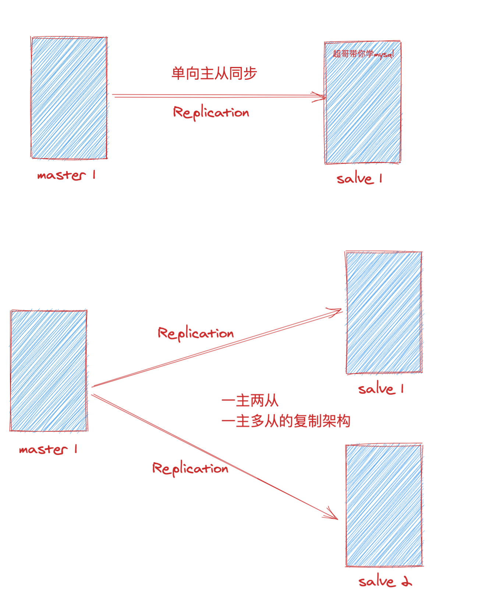
官网mysql复制架构图
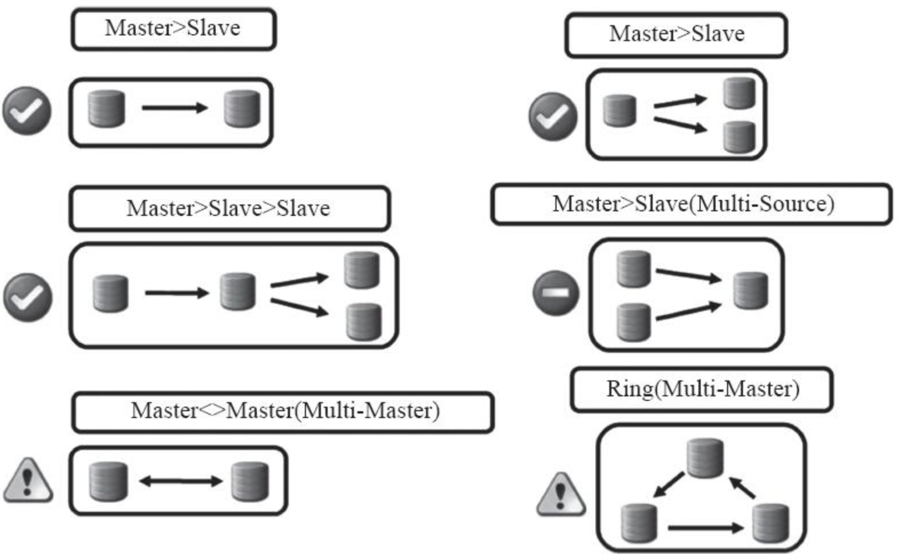
1.为什么用主从复制
MySQL主从复制集群技术使得MySQL数据库支持大规模高并发的读写操作成为可能，同时又能有效地解决物理服务器宕机场景的数据备份和进行快速业务切换的问题。
对于企业生产环境来说，MySQL主从复制主要有以下几个重要的应用场景。
slave作为master实时数据备份
主从服务器架构的设计，可以大大加强MySQL数据库架构的健壮性。例如，当主服务器出现问题时，我们可以人工切换或设置成自动切换到从服务器继续提供服务，此时从服务器的数据和宕机时的主数据库几乎是一致的。
这有些类似于NFS存储数据通过inotify+rsync将数据同步到备份的NFS服务器，只不过MySQL的复制方案是其自带的工具，实现的方式是逻辑的复制，而非文件层级的复制。
缺点
利用MySQL的主从复制技术进行数据备份，在硬件故障、软件故障、人为在数据库外误操作的场景下，该数据备份是有效的；
但对于人为地在数据库中执行drop、delete等语句删除数据的情况，从库的备份功能就没有用了，因为从服务器也会执行删除的语句。
2.主从复制原理（重要）面试常问
MySQL的主从复制是一个异步的复制过程（虽然一般情况下感觉是实时的），数据将从一个MySQL数据库（我们称之为Master）复制到另一个MySQL数据库（我们称之为Slave），在Master与Slave之间实现整个主从复制的过程是由三个线程参与完成的。
其中有两个线程（SQL线程和IO线程）在Slave端，另外一个线程（binlog dump线程）在Master端（MySQL 5及以前是3个线程完成复制，从MySQL 6起SQL线程可以是多个）。
要实现MySQL的主从复制功能，首先必须打开Master端的binlog日志功能。
因为整个复制过程实际上就是Slave从Master端获取binlog日志，然后再在Slave上以相同的顺序执行获取的binlog日志中所记录的各种SQL操作，从而实现主从数据一致的功能。
图解详细原理过程
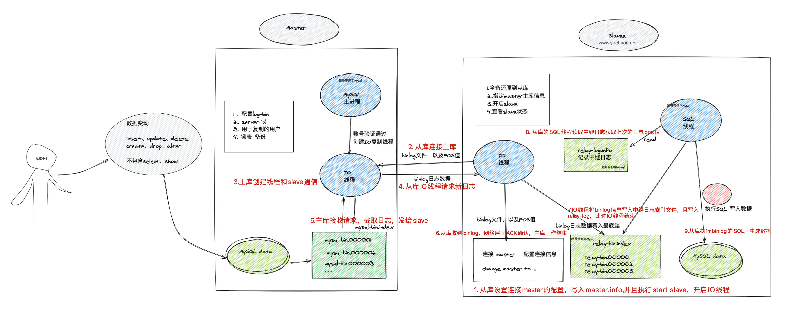
- slave机器
start slave，开启主从复制 - slave机器的I/O线程会通过在master上已授权的复制用户，连接master服务器
- 通过该用户再从指定的binlog日志文件的指定位置，发送binlog日志的内容
- （binglog文件名，pos值，都通过change master命令指定了）
- Master服务器接收到slave的I/O线程请求之后，负责复制的binlog dump线程会根据slave服务器的I/O线程的请求信息，进行读取binlog，以及pos值之后的日志信息
- 然后返回给slave的I/O线程
- 返回的信息除了binlog日志内容以外，以及master服务端新的binlog文件，以及POS值
- slave此时的I/O线程接收到master发来的日志信息后，将binlog日志内容，写入到slave本身的relay-log中继日志中，如mysql-relay-bin.xxxxxx的末端
- 并且记录新的binlog文件信息，名字、pos值，写入master-info文件中，用于下一次读取binlog数据时，可以明确知道数据读取的起点
- slave服务器的SQL线程会实时监测本地的Relay Log新增的日志内容，然后将Reloy Log文件中的内容，解析为SQL语句，且在自身slave按顺序执行这些SQL。
经过这些，就可以确保，master和slave执行了同样的SQL。
在复制状态正常的情况下，master和slave的数据是完全一样的。
复制原理小结
- 主从复制是异步的进行SQL语句的复制
- 复制时，主库有一个
binlog dump 线程，从库有2个线程I/O线程、SQL线程 - 在MySQL5.6之后，slave的SQL线程有多个
- 实现主从复制的必要条件、主库开启binlog，基于binlog复制
- 用于复制的所有mysql节点，server-id不能相同
- binlog文件只记录数据库有
更改的SQL，（主数据库有变化），对select、show以及未修改数据库的语句不会记录
3.主从复制实践
准备3台机器
实现1主2从部署，mysql安装不多赘述，准备配置文件即可
注意server_id的区别
以及只有主库开启了binlog日志
db-51
cat > /etc/my.cnf<<EOF
[mysqld]
user=mysql
datadir=/data/mysql_3306
basedir=/opt/mysql/
socket=/tmp/mysql.sock
port=3306
log_error=/var/log/mysql/mysql.err
server_id=51
log_bin=/binlog/mysql-bin
[mysql]
socket=/tmp/mysql.sock
[client]
socket=/tmp/mysql.sock
EOF
启动
初始化数据
[root@db-51 ~]#ls -d /opt/mysql*
/opt/mysql /opt/mysql5.7.28
[root@db-51 ~]#which mysql
/opt/mysql/bin/mysql
mkdir -p /data/mysql_3306/
mkdir -p /var/log/mysql/
mkdir -p /binlog/
chown -R mysql.mysql /data/ /var/log/mysql/ /binlog/
mysqld --initialize-insecure --user=mysql --basedir=/opt/mysql --datadir=/data/mysql_3306/
# 启动
cp /opt/mysql/support-files/mysql.server /etc/init.d/mysqld
mysql -e "select version()"
db-52
# db-52配置
cat > /etc/my.cnf<<EOF
[mysqld]
user=mysql
datadir=/data/mysql_3306
basedir=/opt/mysql/
socket=/tmp/mysql.sock
port=3306
log_error=/var/log/mysql/mysql.err
server_id=52
[mysql]
socket=/tmp/mysql.sock
[client]
socket=/tmp/mysql.sock
EOF
启动
# author : www.yuchaoit.cn
[root@db-52 /opt]#ls /opt
mysql mysql-5.7.28-linux-glibc2.12-x86_64 mysql-5.7.28-linux-glibc2.12-x86_64.tar.gz
echo 'export PATH=$PATH:/opt/mysql/bin' >> /etc/profile
source /etc/profile
mysql -V
mkdir -p /data/mysql_3306/
mkdir -p /var/log/mysql/
useradd -s /sbin/nologin -M mysql
chown -R mysql.mysql /data/ /var/log/mysql/
mysqld --initialize-insecure --user=mysql --basedir=/opt/mysql --datadir=/data/mysql_3306/
# 启动
cp /opt/mysql/support-files/mysql.server /etc/init.d/mysqld
systemctl daemon-reload
systemctl restart mysqld
mysql -e "select version()"
db-53
# author : www.yuchaoit.cn
cat > /etc/my.cnf<<EOF
[mysqld]
user=mysql
datadir=/data/mysql_3306
basedir=/opt/mysql/
socket=/tmp/mysql.sock
port=3306
log_error=/var/log/mysql/mysql.err
server_id=53
[mysql]
socket=/tmp/mysql.sock
[client]
socket=/tmp/mysql.sock
EOF
启动
[root@db-53 /opt]#ln -s /opt/mysql-5.7.28-linux-glibc2.12-x86_64 /opt/mysql
echo 'export PATH=$PATH:/opt/mysql/bin' >> /etc/profile
source /etc/profile
mysql -V
mkdir -p /data/mysql_3306/
mkdir -p /var/log/mysql/
useradd -s /sbin/nologin -M mysql
chown -R mysql.mysql /data/ /var/log/mysql/
mysqld --initialize-insecure --user=mysql --basedir=/opt/mysql --datadir=/data/mysql_3306/
# 启动
# author : www.yuchaoit.cn
cp /opt/mysql/support-files/mysql.server /etc/init.d/mysqld
systemctl daemon-reload
systemctl restart mysqld
mysql -e "select version()"
db-51主库操作
[root@db-51 ~]#mysql -e "show variables like 'log_bin'"
+---------------+-------+
| Variable_name | Value |
+---------------+-------+
| log_bin | ON |
+---------------+-------+
也可以检查下从库机器
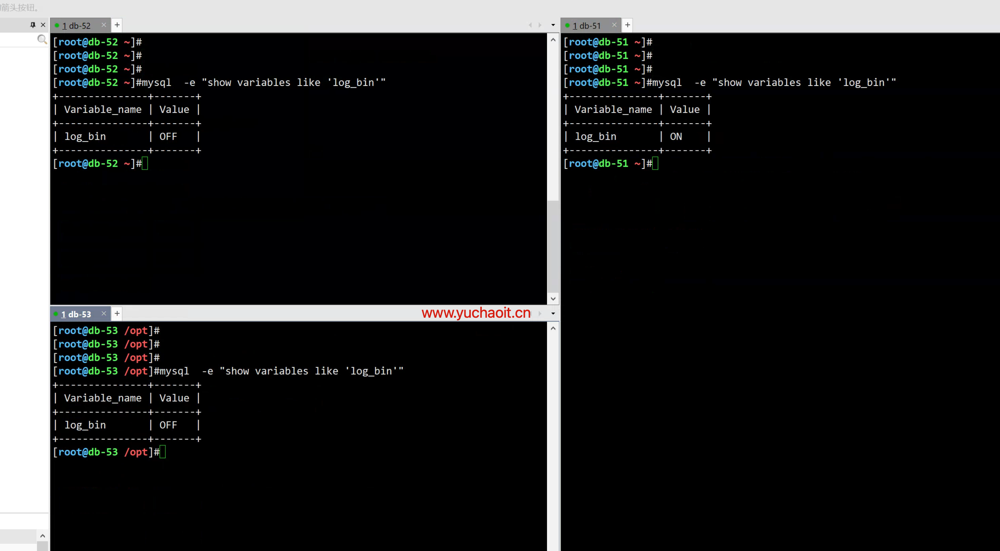
前面原理说过，slave和master连接同步，得有一个账号进行连接master，允许同步数据
1.主库设置个密码
mysqladmin password www.yuchaoit.cn
2.创建复制用户
mysql -uroot -pwww.yuchaoit.cn -e "grant replication slave on *.* to 'repl'@'10.0.0.%' identified by 'www.yuchaoit.cn';"
3.查看用户
mysql -uroot -pwww.yuchaoit.cn -e "select user,host,plugin from mysql.user"
4.查看权限
mysql -uroot -pwww.yuchaoit.cn -e "show grants for repl@'10.0.0.%'"
备份主库数据，发给slave
# 备份命令
# -A 备份所有库表
# --single-transaction，给所有数据库加锁，防止数据写入，导致备份错误
# --master-data=2 将binlog的信息以注释形式备份
# -R 导出mysql自定义函数
# -E 导出events事件
# --triggers 导出所有数据表的触发器
mysqldump -uroot -pwww.yuchaoit.cn -A --master-data=2 --single-transaction -R -E --triggers --max_allowed_packet=64M > /data/full.sql
# 发给slave
for i in 52 53 ;do scp /data/full.sql 10.0.0.$i:/opt/;done
Slave从库操作
先查看binlog的截止点
[root@db-52 ~]#sed -n '19,22p' /opt/full.sql
-- Position to start replication or point-in-time recovery from
--
-- CHANGE MASTER TO MASTER_LOG_FILE='mysql-bin.000003', MASTER_LOG_POS=704;
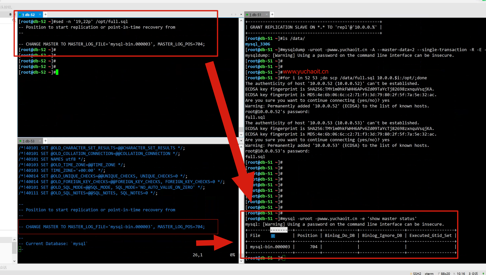
导入数据

[root@db-52 ~]#mysql < /opt/full.sql
[root@db-52 ~]#
[root@db-53 /opt]#
[root@db-53 /opt]#mysql < /opt/full.sql
[root@db-53 /opt]#
连接master
# -- CHANGE MASTER TO MASTER_LOG_FILE='mysql-bin.000003', MASTER_LOG_POS=704;
change master to
master_host='10.0.0.51',
master_port=3306,
master_user='repl',
master_password='www.yuchaoit.cn',
master_log_file='mysql-bin.000003',
master_log_pos=704,
master_connect_retry=10;
# 启动slave复制
start slave;
查看slave复制状态结果
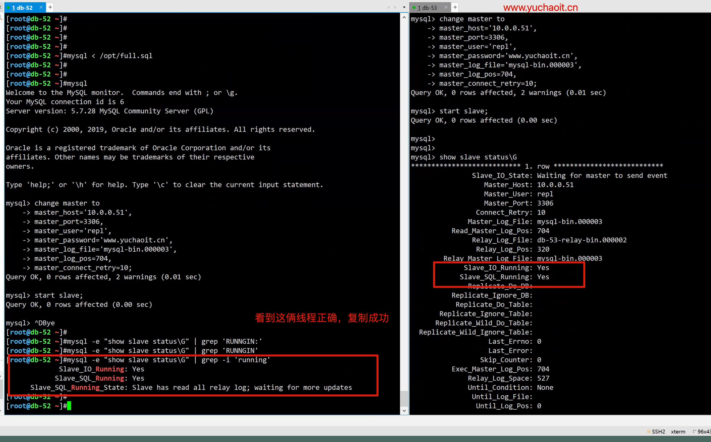
线程解释
Slave_IO_Running：Yes，这个表示I/O的线程状态，I/O线程负责从主库中读取Binlog日志，并将Binlog日志写入从库的中继日志中，状态为Yes表示I/O线程工作正常，否则异常。
Slave_SQL_Running：Yes，这个表示SQL的线程状态，SQL线程负责读取中继日志（relay-log）中的数据并转换为SQL语句应用到从数据库中，状态为Yes表示I/O线程工作正常，否则异常。
Seconds_Behind_Master：0，这个表示在复制过程中，从库比主库延迟的秒数，这个参数很重要，但企业里有更准确地判断主从延迟的方法：在主库中写时间戳，然后通过从库读取时间戳，与当前数据库时间进行比较，从而认定是否真的延迟。
测试主从效果
# 主库写入数据，查看从库结果
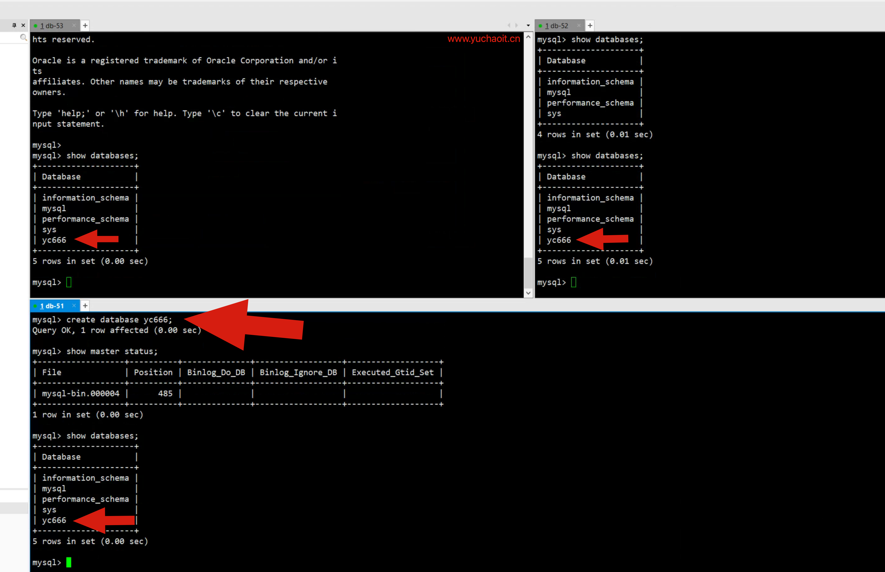
4.查看主从复制原理
主库的线程
binlog_dump_thread
1.负责接收slave请求
2.传送主库binlog发给slave进行同步
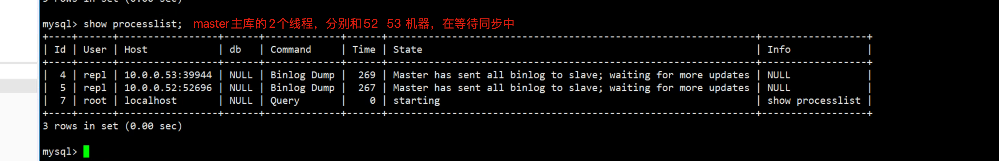
```
## 从库的线程
- IO线程 连接主库dump线程，请求master的binlog，接收master的日志，存储到从库本地的日志（relay-log）
- SQL线程 回放relaylog，写入slave机器数据 ```
具体信息
mysql> show processlist;
+----+-------------+-----------+------+---------+------+--------------------------------------------------------+------------------+
| Id | User | Host | db | Command | Time | State | Info |
+----+-------------+-----------+------+---------+------+--------------------------------------------------------+------------------+
| 1 | system user | | NULL | Connect | 807 | Waiting for master to send event | NULL |
| 2 | system user | | NULL | Connect | 742 | Slave has read all relay log; waiting for more updates | NULL |
| 5 | root | localhost | NULL | Query | 0 | starting | show processlist |
+----+-------------+-----------+------+---------+------+--------------------------------------------------------+------------------+
3 rows in set (0.00 sec)
mysql>
mysql>
mysql>
mysql> show slave status\G
*************************** 1. row ***************************
Slave_IO_State: Waiting for master to send event
Master_Host: 10.0.0.51
Master_User: repl
Master_Port: 3306
Connect_Retry: 10
Master_Log_File: mysql-bin.000004
Read_Master_Log_Pos: 485
Relay_Log_File: db-53-relay-bin.000005
Relay_Log_Pos: 698
Relay_Master_Log_File: mysql-bin.000004
Slave_IO_Running: Yes
Slave_SQL_Running: Yes
Replicate_Do_DB:
Replicate_Ignore_DB:
Replicate_Do_Table:
Replicate_Ignore_Table:
Replicate_Wild_Do_Table:
Replicate_Wild_Ignore_Table:
Last_Errno: 0
Last_Error:
Skip_Counter: 0
Exec_Master_Log_Pos: 485
Relay_Log_Space: 1071
Until_Condition: None
Until_Log_File:
Until_Log_Pos: 0
Master_SSL_Allowed: No
Master_SSL_CA_File:
Master_SSL_CA_Path:
Master_SSL_Cert:
Master_SSL_Cipher:
Master_SSL_Key:
Seconds_Behind_Master: 0
Master_SSL_Verify_Server_Cert: No
Last_IO_Errno: 0
Last_IO_Error:
Last_SQL_Errno: 0
Last_SQL_Error:
Replicate_Ignore_Server_Ids:
Master_Server_Id: 51
Master_UUID: d8710e0b-0da9-11ed-bac3-000c29b76f3a
Master_Info_File: /data/mysql_3306/master.info
SQL_Delay: 0
SQL_Remaining_Delay: NULL
Slave_SQL_Running_State: Slave has read all relay log; waiting for more updates
Master_Retry_Count: 86400
Master_Bind:
Last_IO_Error_Timestamp:
Last_SQL_Error_Timestamp:
Master_SSL_Crl:
Master_SSL_Crlpath:
Retrieved_Gtid_Set:
Executed_Gtid_Set:
Auto_Position: 0
Replicate_Rewrite_DB:
Channel_Name:
Master_TLS_Version:
1 row in set (0.00 sec)
mysql>
关于slave线程重点日志
Slave_SQL_Running_State: Slave has read all relay log; waiting for more updates
Slave_IO_State: Waiting for master to send event
Master_Host: 10.0.0.51
Master_User: repl
Master_Port: 3306
Connect_Retry: 10
Master_Log_File: mysql-bin.000004
Read_Master_Log_Pos: 485
Relay_Log_File: db-53-relay-bin.000005
Relay_Log_Pos: 698
Relay_Master_Log_File: mysql-bin.000004
Slave_IO_Running: Yes
Slave_SQL_Running: Yes
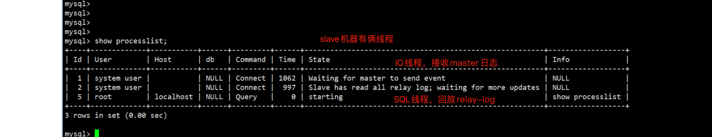
主从复制涉及的文件
主库
[root@db-51 ~]#ls /binlog/
mysql-bin.000001 mysql-bin.000002 mysql-bin.000003 mysql-bin.000004 mysql-bin.index
binlog日志文件
从库
中继日志 relay-log
中继日志 relay-log
命名方式
datadir/hostname-relay-bin.xxxxx
[root@db-53 ~]#ls /data/mysql_3306/ -l |grep relay
-rw-r----- 1 mysql mysql 373 Jul 29 00:26 db-53-relay-bin.000004
-rw-r----- 1 mysql mysql 698 Jul 29 00:27 db-53-relay-bin.000005
-rw-r----- 1 mysql mysql 50 Jul 29 00:26 db-53-relay-bin.index
-rw-r----- 1 mysql mysql 61 Jul 29 00:27 relay-log.info
[root@db-53 ~]#
作用：
存储获取到的binlog信息
主库信息文件
[root@db-53 ~]#cat /data/mysql_3306/master.info
25
mysql-bin.000004
485
10.0.0.51
repl
www.yuchaoit.cn
3306
10
0
0
30.000
0
d8710e0b-0da9-11ed-bac3-000c29b76f3a
86400
0
[root@db-53 ~]#
作用：
记录主库ip，port，user，密码，binlog位置点灯信息
relay-log.info
记录SQL，线程回放的位置
[root@db-53 ~]#cat /data/mysql_3306/relay-log.info
7
./db-53-relay-bin.000005
698
mysql-bin.000004
485
0
0
1
5.史上最强主从复制原理图
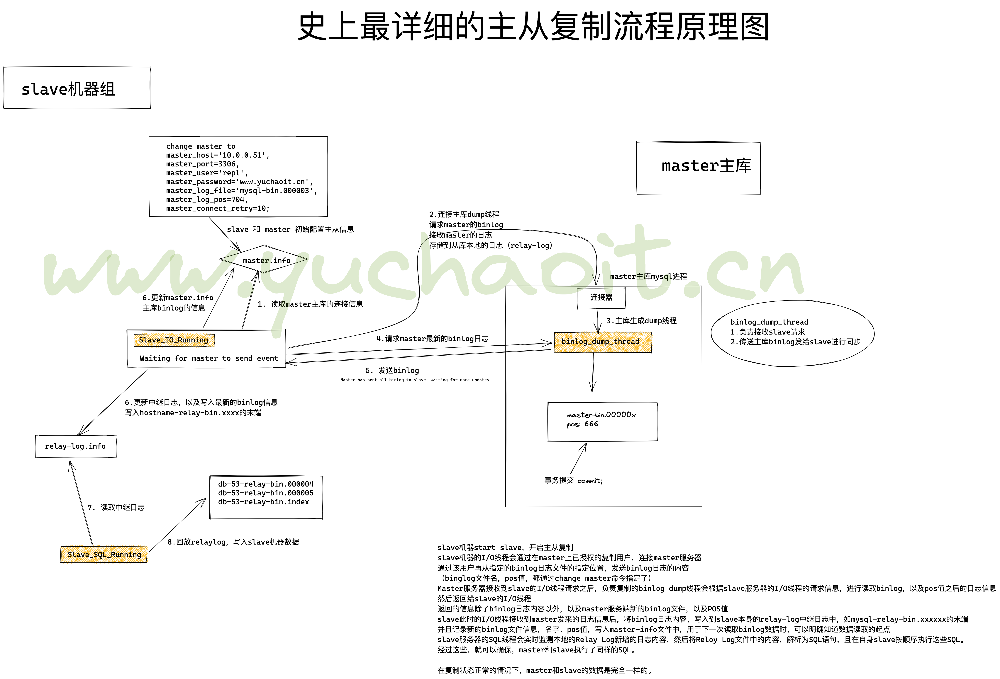
6.主从复制监控
如下日志是排查主从故障的核心思路
6.1主库
查看复制线程状态
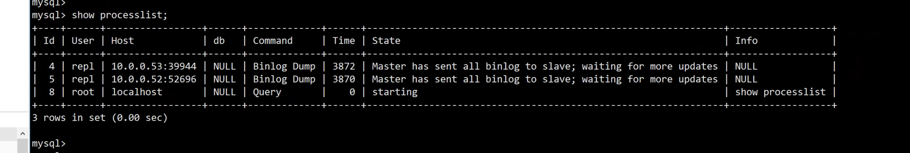
查看slave节点信息
mysql> show slave hosts;
+-----------+------+------+-----------+--------------------------------------+
| Server_id | Host | Port | Master_id | Slave_UUID |
+-----------+------+------+-----------+--------------------------------------+
| 53 | | 3306 | 51 | 97630496-0def-11ed-8051-000c291bb766 |
| 52 | | 3306 | 51 | 96c4afb2-0dee-11ed-bcc5-000c294c7d18 |
+-----------+------+------+-----------+--------------------------------------+
2 rows in set (0.00 sec)
6.2从库（重点）
# 查看从库复制状态
show slave status \G
# 查看主库连接信息、以及binlog、pos值等
mysql> show slave status\G
*************************** 1. row ***************************
Slave_IO_State: Waiting for master to send event
Master_Host: 10.0.0.51
Master_User: repl
Master_Port: 3306
Connect_Retry: 10
Master_Log_File: mysql-bin.000004
Read_Master_Log_Pos: 485
# 擦看relay-log回放的信息
Relay_Log_File: db-53-relay-bin.000005
Relay_Log_Pos: 698
Relay_Master_Log_File: mysql-bin.000004
Slave_IO_Running: Yes
Slave_SQL_Running: Yes
# 线程状态信息，这个状态不对，复制就有问题
[root@db-53 /data/mysql_3306]#mysql -uroot -pwww.yuchaoit.cn -e "show slave status\G" |grep -E 'IO|SQL'
mysql: [Warning] Using a password on the command line interface can be insecure.
Slave_IO_State: Waiting for master to send event
Slave_IO_Running: Yes
Slave_SQL_Running: Yes
Last_IO_Errno: 0
Last_IO_Error:
Last_SQL_Errno: 0
Last_SQL_Error:
SQL_Delay: 0
SQL_Remaining_Delay: NULL
Slave_SQL_Running_State: Slave has read all relay log; waiting for more updates
Last_IO_Error_Timestamp:
Last_SQL_Error_Timestamp:
# 提取复制相关信息
[root@db-53 /data/mysql_3306]#mysql -uroot -pwww.yuchaoit.cn -e "show slave status\G" |grep -E 'Replicate'
mysql: [Warning] Using a password on the command line interface can be insecure.
Replicate_Do_DB:
Replicate_Ignore_DB:
Replicate_Do_Table:
Replicate_Ignore_Table:
Replicate_Wild_Do_Table:
Replicate_Wild_Ignore_Table:
Replicate_Ignore_Server_Ids:
Replicate_Rewrite_DB:
# 落后主库的秒数
[root@db-53 /data/mysql_3306]#mysql -uroot -pwww.yuchaoit.cn -e "show slave status\G" |grep -E 'Behind'
mysql: [Warning] Using a password on the command line interface can be insecure.
Seconds_Behind_Master: 0
# 关于GTID的信息
[root@db-53 /data/mysql_3306]#mysql -uroot -pwww.yuchaoit.cn -e "show slave status\G" |grep -E 'Gtid|Auto'
mysql: [Warning] Using a password on the command line interface can be insecure.
Retrieved_Gtid_Set:
Executed_Gtid_Set:
Auto_Position: 0
6.3位置点信息
查看IO线程以获取的主库binlog的位置点
Master_Log_File: mysql-bin.000004
Read_Master_Log_Pos: 485
SQL线程回放的relaylog的位置点
[root@db-53 /data/mysql_3306]#mysql -uroot -pwww.yuchaoit.cn -e "show slave status\G" |grep 'Relay_Log_'
mysql: [Warning] Using a password on the command line interface can be insecure.
Relay_Log_File: db-53-relay-bin.000005
Relay_Log_Pos: 698
Relay_Log_Space: 1071
SQL线程回放relaylog的位置点，对应的主库的binlog位置点
[root@db-53 /data/mysql_3306]#mysql -uroot -pwww.yuchaoit.cn -e "show slave status\G" |grep '_Master'
mysql: [Warning] Using a password on the command line interface can be insecure.
Read_Master_Log_Pos: 485
Relay_Master_Log_File: mysql-bin.000004
Exec_Master_Log_Pos: 485
Seconds_Behind_Master: 0
# 用于计算主从复制的延时日志量
7.主从复制故障解决
监控如下复制状态的值
Slave_IO_Running: Yes # IO线程工作状态，yes，no，connection三个状态
Slave_SQL_Running: Yes # SQL工作状态，yes ，no
Last_IO_Error: # IO故障代码，2003，1045，1040,1593,1236
Last_SQL_Errno: 0 # SQL线程故障代码，1008，1007
[root@db-53 /data/mysql_3306]#mysql -uroot -pwww.yuchaoit.cn -e "show slave status\G" |grep 'Error'
mysql: [Warning] Using a password on the command line interface can be insecure.
Last_Error:
Last_IO_Error:
Last_SQL_Error:
Last_IO_Error_Timestamp:
Last_SQL_Error_Timestamp:
故障常见原因
网络波动
master 连接信息错误，如端口，用户，密码，授权规则错误，复制无权限
防火墙拒绝请求
主机连接数到达上限
[root@db-53 /data/mysql_3306]#mysql -uroot -pwww.yuchaoit.cn -e "select @@max_connections;"
mysql: [Warning] Using a password on the command line interface can be insecure.
+-------------------+
| @@max_connections |
+-------------------+
| 151 |
+-------------------+
master、slave版本不一，5.7 、8.0、 5.6
解决思路
1. 网络是否通
2. 确认复制的change master配置正确
3. 主从的server_id是否正常
4. 主从的server_uuid是否正常
5.一般情况下，最直接暴力的解决办法，重新搭建主从
备份数据+重新构建主从关系，能最快解决问题。